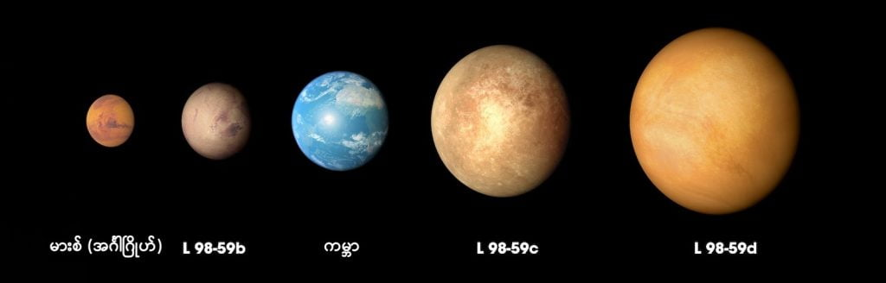

ဒီကြယ်ကို L 98-59 လို့ ပညာရှင်တွေက အမည်ပေး ထားကြပါတယ်။ ဒီကြယ်ဟာ ကမ္ဘာကဆို အလင်းနှစ် ၃၅ နှစ်ပဲ ဝေးပါတယ်။ အာကာသ အတိုင်းအတာ အရဆိုရင်တော့ အတော်လေး နီးတာပေါ့ဗျာ။ တွေ့ရှိချက်အရ ဒီကြယ်ကို ပတ်နေတဲ့ ဂြိုလ်ပေါင်း ၅ စင်းလောက် ရှိမယ်လို့ ဆိုပါတယ်။ အဲ့သည် ဂြိုလ်တွေထဲမှာ ပင်လယ်ရေတွေနဲ့ ပြည့်နေတဲ့ ဂြိုလ်တစ်စင်းနဲ့ အသေးငယ် အပေါ့ပါးဆုံး ဂြိုလ်တစ်စင်းတို့လဲ ပါပါတယ်။ ဒီ ပင်လယ်ပြင်နဲ့ ပြည့်နေတဲ့ ဂြိုလ်မှာ သက်ရှိတွေ အသက်ရှင် နေထိုင်နိုင်ဖို့ အခွင့်အလမ်းလဲ ရှိနေပါတယ်။
ဒီတွေ့ရှိချက်တွေကို ပြီးခဲ့တဲ့ သောကြာနေ့က the journal Astronomy & Astrophysics မှာ တင်ပြတာ ဖြစ်ပါတယ်။
တတိယမြောက် နေရာမှာရှိနေတဲ့ ဂြိုလ်ကတော့ ဂြိုလ်ဒြပ်ထုရဲ့ ၃၀% လောက်က ရေတွေ ပါတဲ့။ ဒီလောက်တောင် ရေတွေများတာမို့ ဒီဂြိုလ်ဟာ ပင်လယ်နဲ့ ပြည့်နေတဲ့ ဂြိုလ်တစ်ခု (Ocean World) ဖြစ်ဖို့ များပါတယ်။
ဒီ ဂြိုလ်ပ ၃ လုံးကို ပထမဆုံး ရှာတွေ့ခဲတာက ၂၀၁၉ ခုနှစ်က နာဆာရဲ့ နေအဖွဲ့အစည်း ပြင်ပက ဂြိုလ်များ ရှာဖွေရေး စီမံကိန်း (planet-hunting TESS mission, or Transiting Exoplanet Survey Satellite) ကနေ ရှာတွေ့ခဲ့တာ ဖြစ်ပါတယ်။ ဒီ စီမံကိန်းမှာ အာကာသထဲ လွှတ်တင်ထားတဲ့ မှန်ပြောင်ကို အသုံးပြုပြီး ကြယ်တွေကို ပတ်နေတဲ့ ဂြိုလ်တွေကို ရှာဖွေခြင်း ဖြစ်ပါတယ်။ ရှာဖွေတဲ့ အခါ ကြယ်တစ်စင်းရဲ့ အရှေ့ကနေ ဂြိုလ်တစ်စင်းဖြတ်သွားရင် ကြယ်ရဲ့ အရောင် မှိန်သွားတာကို မူတည်ပြီးရှာဖွေတာ ဖြစ်ပါတယ်။

(Credits: NASA’s Goddard Space Flight Center)
ဒီနည်းနဲ့ စစ်ဆေးလိုက်တော့ အထက်ပါ ကြယ်ရဲ့ အနီးဆုံးမှာ ရှိတဲ့ ဂြိုလ်ဟာ သောကြာဂြိုလ်ရဲ့ တစ်ဝက်လောက်ပဲ ဒြပ်ထုရှိပါတယ်တဲ့။ ဒါဟာ နေစကြာဝဠာ ပြင်ပက တွေ့ရှိခဲ့သမျှ ဂြိုလ်တွေထဲမှာတော့ အသေးငယ်ဆုံး ဂြိုလ်ဖြစ်ပါတယ်။
ဒီစုံစမ်းလေ့လာမှုမှာပဲ အမှတ် (၄) ဂြိုလ်ကိုလဲ တွေ့ရှိရပါတယ်။ နောက်ပြီး ၅ ခုမြောက်ဂြိုလ် လို့ ယူဆဖွယ်ရာ အချက်အလက်တွေကိုလဲတွေ့ရှိခဲ့ပါသေးတယ်။။ ဒီ ၅ ခုမြောက် ဂြိုလ်ဟာ ရှိခဲ့မယ် ဆိုရင် နေနဲ့ မနီးလွန်း မဝေးလွန် သင့်တော်တဲ့ အကွာအဝေးကနေ ပါတ်နေတာ ဖြစ်နိုင်ပါတယ်။ ဒီအကွာအဝေးကို သတ္တဝါတွေ အသက်ရှင်နိုင်ဖို့ သင့်တော်တဲ့ အခြေအနေတွေ ရှိတဲ့ habitable zone ခေါ် အသက်ရှင်ရပ်တည်နိုင်တဲ့ ဇုန် လို့ သတ်မှတ်ပါတယ်။
ဒီ habitable zone ခေါ် အသက်ရှင်သန်နိုင်တဲ့ zone မှာ ရှိနေတဲ့ ဂြိုလ်တွေပေါ်မှာ သက်ရှိတွေ အသက်ရှင်သန်ဖို့ သင့်တော်တဲ့ လေထု ရှိနေနိုင်ပါတယ်။
ဒီ အပေါ်က မှန်ပြောင်းအသစ် နှစ်ခုစလုံးက အားအလွန် ကောင်းကြတာမို့ ဒီဂြိုလ်တွေရဲ့ လေထုထဲကို ဖောက်ထွင်းပြီး မြင်နိုင်ကြမှာ ဖြစ်ပါတယ်။ ဒါဆိုရင် ဒီဂြိုလ်တွေ ပေါ်မှာ သက်ရှိတွေ အသက်ရှင်နေကြခြင်း ရှိမရှိ ညွှန်ပြနေတဲ့ အချက်အလက် တချို့ ရကောင်းရလာနိုင်မှာ ဖြစ်ပါတယ်။
“ကျွန်တော်တို့ဟာ နေအဖွဲ့အစည်း ပြင်ပက ဂြိုလ်တွေကို စိတ်ဝင်တစား လေ့လာခဲ့ကြတာ ကြာပါပြီ။ အခု ဒီမှန်ပြောင်းကြီးတွေ ပြီးရင်တော့ ဒီ ဂြိုလ်တွေကို အသေးစိတ် လေ့လာနိုင်တော့မှာ ဖြစ်ပါတယ်။ အထူးသဖြင့် အသက်ရှင်နိုင်တဲ့ အခြေအနေတွေ ရှိတဲ့ ပါတ်ဝန်းကျင်မှာ ရှိနေတဲ့ ဂြိုလ်တွေရဲ့ လေထုထဲကို မြင်ကြရ တော့မှာ ဖြစ်ပါတယ်” လို့ အထက်ပါ ဂြိုလ်များကို ရှာဖွေတွေ့ရှိခဲ့တဲ့ အဖွဲ့က သိပ္ပံပညာရှင် တစ်ဦးဖြစ်သူ အိုလီဗာ ဒီမန်ဂျီယို (Olivier Demangeon) က ပြောကြားလိုက်ပါတယ်။
Reference: Planets similar to those in our solar system found around nearby star